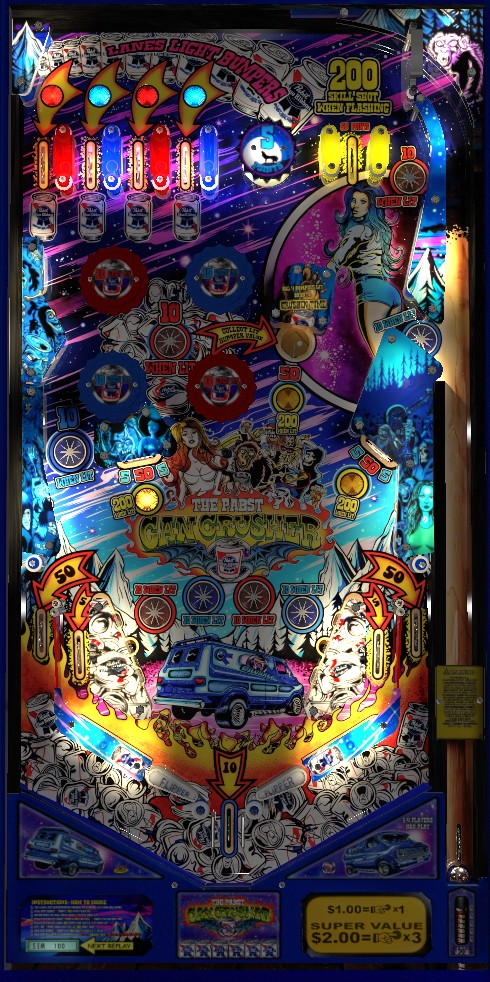

These three games are reskins of each other. They have identical rules and scoring despite their very different sound and art packages.
The skill shot to the lone top lane in the upper right is very difficult but worthwhile, awarding 200 points and spotting a top left lane. With the ball in the lower playfield, try shooting for whichever bullseye target or saucer is lit for 200 points; if these are too dangerous, pivot to a top-all-day strategy collecting top lanes and lighting bumpers for 10 points. Lighting all 4 bumpers then shooting the saucer unlights the bumpers, but allows you to recollect the top left lanes to make the bumpers flash for 20 instead of 10. Try not to reset the bumpers again, though, because this value can't be advanced further.
The below picture of The Pabst Can Crusher's playfield was taken from the VPX recreation by MachWon and many others.

Whoa Nellie! Big Juicy Melons, The Pabst Can Crusher, and Primus are inspired by electromechanical games, but they run on solid-state electronics. They are commonly considered to be classics games for tournaments. They do, however, afford the usual 2 warnings before tilting rather than ending your ball straight away like a 1960s game would.
These are 4-player games, despite there being only one set of score reels in the backbox. These score reels also do not work exactly like EM score reels, and can sometimes be slow to update with your exact score. To see your score update instantly and compare it to the other players in a multiplayer game, look at the tiny DMD on the apron near where your left hand is likely to rest when playing the game.
The skill shot is a precise-power plunge to the lone top lane in the upper right of the playfield. Lights within the two walls that form the lane will flash to indicate the skill shot is ready. Making the skill shot lane when flashing scores 200 points and spots one of the 4 top left lanes if you do not already have them all. The skill shot is unqualified when any switch in the game other than a top left lane, the 5-point bumper, or the skill shot itself is made. Rolling through the skill shot lane when it is not flashing scores 50 points. The skill shot is available on any plunge, including replunges awarded by having the ball fall into the free ball lane in the upper right of the playfield.
Making any top left lane scores 10 points. If a lane is lit or flashing, roll through that lane to unlight it. Each top lane is tied to 3 other features around the playfield, and unlighting a top lane will light all 3 of that lane's corresponding features.
Pop bumpers and star rollovers score 10 points when solidly lit, or 1 when unlit. These features will usually briefly flash after they are made, but this is purely a visual effect and does not change their value.
Making the saucer to the right of the pop bumpers scores 50 points or 200 when lit, plus the value of all lit or flashing pop bumpers. If all 4 bumpers are lit or flashing, all 4 top lanes will be reset, and their corresponding features will be unlit; this begins an increased scoring mode, which is referred to as Crushing Time on The Pabst Can Crusher and Pudding Time on Primus but does not have a special name on Whoa Nellie!. In the increased scoring mode, recollecting a top lane will solidly light its two corresponding star rollovers, but its corresponding pop bumper will flash, indicating it scores 20 points per hit instead of 1 or 10. If all 4 pop bumpers are flashing, making the saucer will once again reset the top lanes and unlight the features those lanes are tied to, but the pop bumpers will never be worth more than 20 points, and star rollovers are never worth more than 10.
Collected top lanes, as well as whether or not increased scoring/Crushing Time/Pudding Time is active, are remembered from ball to ball for each player.
The lower left and lower right standup targets are bullseye targets, which can register an "edge" hit and a "center" hit. An edge hit always scores 5 points. A center hit scores 50 points if the target is not lit, or 200 if it is. One of the bullseye targets or the saucer to the right of the bumpers will be lit at any one time; any switch in the game that scores 5 or 50 points will rotate whether the left bullseye, the saucer, or the right bullseye is lit. As mentioned previously, the saucer scores either 50 points when not lit or 200 when lit, plus the value of all lit or flashing pop bumpers, resetting the top lane/star rollover/bumper sequence if all 4 top lanes are collected.
Whoa Nellie!/The Pabst Can Crusher/Primus has a conventional in/out lane setup. Out lanes score 50 points, and in lanes score 5. Making any in/out lane rotates which of the three 200s is lit (left bullseye, saucer, right bullseye). Slingshots always score 1 points. Draining down the center between the flippers scores 10 points. The posts just below the flippers that form the center 10-point out lane can sometimes be used to save a ball, so don't resign yourself to a center drain prematurely. It is possible to drain under a raised flipper and score no points from any of the out lanes. It is also possible to trap a ball between a partially raised flipper and one of the center out lane's posts; if you do, try to use the flipper to "dribble" the ball against the post to give it enough momentum to be nudge above the flippers.
There is no end of ball bonus of any kind, and there is also no extra ball feature.